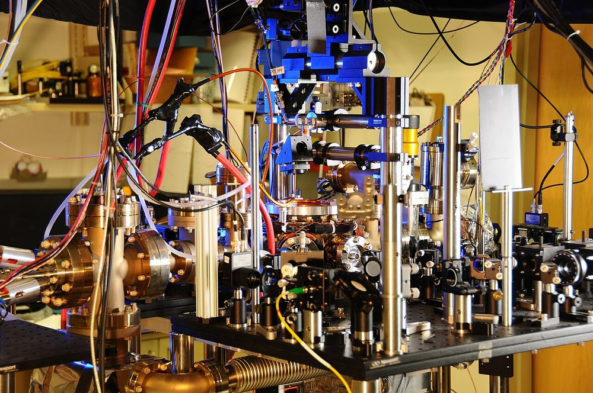
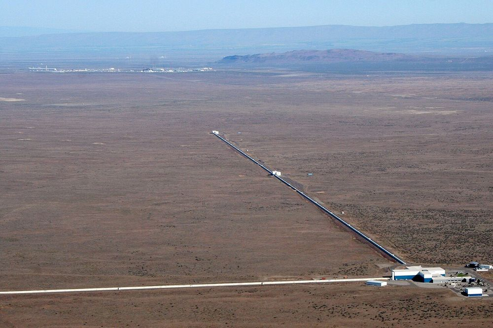

Atomic clocks, gravitational-wave detectors and encrypted links already use quantum effects. The computer gets the headlines; these are the ones that ship.
You'll be able to explain why quantum sensors already ship, and what quantum key distribution does and does not do.
Quantum sensing turns fragility into a feature: a system disturbed by almost anything is a good detector of almost anything. It already works. The best optical clock is uncertain by 8.1 × 10−19, and LIGO has injected squeezed light into its detectors since 2019. Quantum networks are earlier: a three-node entangled network exists in one lab. In both, the textbook gain (error falling as 1/N instead of 1/√N) is easy to lose to noise, and quantum key distribution is not a substitute for post-quantum cryptography.


Clocks. The second is defined by counting 9,192,631,770 oscillations of a caesium-133 atom. Optical lattice clocks use a much faster transition in strontium atoms, and the best of them, at JILA, reports a systematic uncertainty of 8.1 × 10−19 (arXiv 2403.10664). A clock that good would be off by one second in about 39 billion years, nearly three times the age of the universe. Comparing clocks like this against one another is one way physicists test whether the constants of nature drift.
Gravitational waves. LIGO’s detectors are limited at high frequency by quantum noise in the laser light. Since the third observing run they have injected squeezed light, a state with less noise in the quantity that matters, which the LIGO team reports improved sensitivity above 50 Hz by up to 3 dB and raised the expected detection rate by 40% at one site and 50% at the other (Phys. Rev. Lett. 123, 231107). That is quantum technology paying its way in the world’s most sensitive instrument, and it involves no quantum computer at all.
A quantum network moves quantum states between places. The pieces exist in isolation. A three-node network of diamond spin qubits has been demonstrated at Delft, with entanglement distribution and entanglement swapping between the nodes (Science 372, 259). A qubit’s state has been teleported from the ground to a satellite up to 1,400 km away (Nature 549, 70; what that does and does not mean). What does not yet exist is anything you could call an internet: no network of many nodes, on demand, at useful speed.
It does not mean quantum sensors are about to replace GPS receivers in phones, or that a “quantum internet” is a few years off. The best clocks are laboratory instruments. The claim here is narrower: this is where the physics already pays for itself.
Measure a phase with N independent probes and the error shrinks as 1/√N, the standard quantum limit. Entangle the probes and, in principle, it shrinks as 1/N, the Heisenberg limit. With 10,000 probes that is a gain of √10,000 = 100 in precision, for free, from the physics.
The catch is that entangled states are the most fragile ones. Demkowicz-Dobrzański, Kołodyński and Guţă showed that once decoherence is included, the best possible enhancement in the limit of many probes is generically only a constant factor, not a change in scaling (Nature Communications 3, 1063). That is why real instruments report gains of a few decibels, not a factor of 100.
In BB84 (Bennett and Brassard, 1984), one party sends single photons prepared in one of two bases; the other measures in a randomly chosen basis. Measuring a photon in the wrong basis disturbs it, so an eavesdropper leaves a trace in the errors the two parties find when they compare a sample. If the error rate is low enough, they distil a secret key; the asymptotic threshold is about 11% (Shor and Preskill, 2000).
Distance is the wall. Ordinary fibre loses about 0.2 dB per kilometre, so 1,000 km is 200 dB: a factor of 1020 in power. Twin-field QKD (Lucamarini et al., 2018) sends the signal to a middle station and its rate scales as the square root of that transmittance, 10−10 instead of 10−20, and a group in China has demonstrated it over 1,000 km of fibre (Phys. Rev. Lett. 130, 210801).
What QKD does not do. It needs an authenticated classical channel to begin with, it produces keys rather than signing anything, and real devices have been attacked through their detectors (Lydersen et al., 2010). It is not a replacement for the cryptography that is being migrated. The short answer on this site is “not for this”.
FormalFor a pure probe state and a phase generated by an operator G, the quantum Fisher information is FQ = 4 Var(G), and the Cramér–Rao bound says the phase error after ν repeats obeys
Take G = Jz = ½ Σ σz over N qubits. A product state |+⟩⊗N has variance N/4, so FQ = N and Δφ = 1/√(νN): the standard quantum limit. The GHZ state (|0…0⟩ + |1…1⟩)/√2 has variance N2/4, so FQ = N2 and Δφ = 1/(N√ν): the Heisenberg limit. Both are computed exactly for N = 1 to 8 in a script.
For BB84 the asymptotic key rate is 1 − 2h(e), with h the binary entropy and e the error rate. It reaches zero at e ≈ 0.110, the 11% above. And the fibre arithmetic: 0.2 dB/km × 1,000 km = 200 dB = a factor 1020; the square root of 10−20 is 10−10.
Check yourself
You measure a phase with 10,000 probes. In the ideal, noiseless case, how much more precise is a perfectly entangled (Heisenberg-limited) measurement than 10,000 independent probes?
Independent probes give error 1/√N = 1/100; the Heisenberg limit gives 1/N = 1/10,000. The ratio is √N = 100. And that is the noiseless ideal: with decoherence the enhancement collapses to a constant factor, which is why real detectors report a few decibels.
The protocol behind every quantum network, worked and verified.
The Machinery, topic 05 →Chemistry and materials, and why the honest answer is still “not yet shown”.
Applications →Why key distribution is not what replaces the encryption that quantum computers threaten.
Isn't QKD the fix? →.jpg){kind=link}